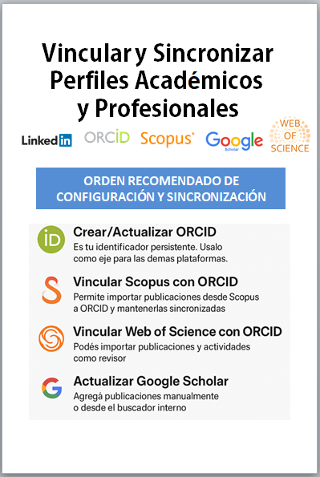

La visibilidad académica e investigativa: Creación y fortalecimiento del perfil digital.
Recursos Destacados
La visibilidad académica e investigativa: Creación y fortalecimiento del perfil digital.
Taller en la jornada de Investigación organizado por la Biblioteca de la Facultad de Ciencias Económicas .
Ver PresentaciónPromoción de la investigación e identidad digital: el caso de la Universidade da Coruña
Un estudio en la Universidade da Coruña analizó la presencia digital de su comunidad investigadora en diversas plataformas científicas. Aunque los niveles de visibilidad pueden mejorar, los resultados son alentadores en comparación con otros estudios. El trabajo destaca la importancia del rol activo de los investigadores, las bibliotecas universitarias y las instituciones en la gestión de la identidad digital académica.
Leer ArticuloIdentidad digital como investigadores. La evidencia y la transparencia de la producción científica
En el contexto actual, la presencia de los investigadores en plataformas digitales es inevitable y, si se gestiona adecuadamente, puede potenciar significativamente su visibilidad y reputación científica. Sin embargo, esta oportunidad conlleva la responsabilidad de mantener actualizados y verificados los datos que estos sistemas reflejan, ya que las automatizaciones no siempre garantizan precisión..
Leer ArticuloRelevancia de la identidad digital y la transparencia en la investigación
La identidad digital del investigador es clave para aumentar la visibilidad, el impacto y las oportunidades de colaboración científica. Su gestión adecuada fortalece la integridad académica y el desarrollo profesional, aunque implica desafíos como la privacidad, la multiplicidad de perfiles y el uso crítico de métricas en línea..
Leer ArtículoLa visibilidad académica e investigativa
La visibilidad académica es fundamental para el reconocimiento y la proyección del trabajo científico, incidiendo en la promoción y permanencia del investigador. Publicar en acceso abierto y vincular la producción a plataformas digitales amplía su alcance y citación. Promover activamente la investigación se vuelve así una tarea esencial para lograr mayor impacto académico..
Leer ArtículoTutorial: Registro en ORCID paso a paso
Al registrarse en ORCID se adquiere una iD que permite distinguirnos de cualquier otro investigador. Una vez realizado el registro se puede incorporar información profesional como afiliaciones, subvenciones, publicaciones, evaluaciones de pares, etc. También se puede usar el iD para compartir información con otros sistemas, lo que garantiza que se reciba el reconocimiento por todas las contribuciones realizadas.
Ver TutorialCreación y actualización de perfil en Google Scholar
En el contexto actual, la presencia de los investigadores en plataformas digitales es inevitable y, si se gestiona adecuadamente, puede potenciar significativamente su visibilidad y reputación científica. Sin embargo, esta oportunidad conlleva la responsabilidad de mantener actualizados y verificados los datos que estos sistemas reflejan, ya que las automatizaciones no siempre garantizan precisión..
Ver TutorialCómo usar ResearchGate paso a paso | Tutorial fácil y rápido
En este tutorial te explicamos cómo utilizar ResearchGate, la red social académica más popular entre investigadores y científicos. Aprenderás a crear tu perfil, subir publicaciones, buscar artículos, hacer networking con otros investigadores y aprovechar al máximo todas las herramientas que ofrece la plataforma.
Ver TutorialTutorial LinkedIn - Paso a Paso - en Español
En este tutorial paso a paso, te voy a enseñar como usar LinkedIn la red social profesional más grande del mundo.
Ver TutorialDescubrir los perfiles de investigadores en Web of Science
Se identifican los autores, sus identificadores y sus perfiles de investigador. Además se muestra como se crean y validan los perfiles de investigador y como crearlo, editarlo y compartirlo.
Ver TutorialScopus: Perfiles de autor
Taller preparado por Feicyt. Vídeo de la jornada de formación online celebrada entre el 07 y el 09/06/2021, en el que se explica qué es Scopus, Scopus data (Gold Standard), se muestra un perfil de autor y a través de él, se evalúa su impacto, se crea un nuevo perfil de autor, se muestra cómo usarlo en otras plataformas y como revisarlo y actualizarlo mediante el Author Feedback Wizard. NO DISPONIBLE TODAVIA PARA NUESTRA UNIVERSIDAD.
Ver TutorialComo vincular tus publicaciones de Google académico a tu perfil de ORCID
Las publicaciones científicas de nuestra autoría que se encuentran incluidas en el perfil de Google Académico, se pueden importar a ORCID por medio de un fichero BibTeX..
Ver TutorialÍndice H
Tutorial sobre el Índice H elaborado por el Observatorio de Bibliometría e Información Científica de la Universidad de Salamanca en colaboración con USAL TV y Servicio de Producción e Innovación Digital (+IN)..
Ver Tutorial